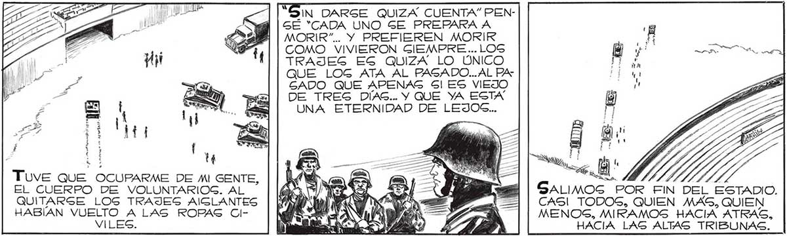
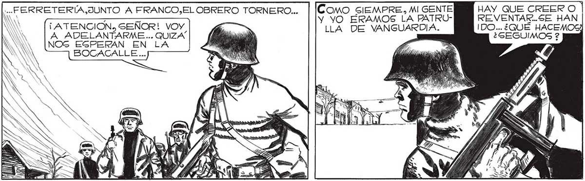

180 ... PARTICIPARA DE LOG BENE: FICIOG DE MORIR PELEANDO... PERO NO HABIA OCAGION YA DE GEGUIR CAVILANDO; EL ESTADIO HERVIA CON LOS PREPARATIVOG DE LA EVACUACION. )IN DARGE QUIZA CUENTA” PENGE "CADA UNO SE PREPARA A MORIR”... Y PREFIEREN MORIR COMO VIVIERON GIEMPRE ... LOG TRAJES ES QUIZA LO ÚNICO QUE LOG ATA AL PASADO... AL PAGADO QUE APENAS Sl ES VIEJO DE TREG DÍAS... Y QUE YA ESTA UNA ETERNIDAD DE LEJOS... 4 F i 2 A » t a Tuve QUE OCUPARME DE MI GENTE, EL CUERPO DE VOLUNTARIOG. AL QUITARSE LOS TRAJES AIGLANTES HABÍAN VUELTO A LAS ROPAS CIlVILES. CAS! TODOS, QUIEN MAS, QUIEN MENOS, MIRAMOSG HACIA ATRAS, HACIA LAG ALTAS TRIBUNAS. - . | = «l my = E ' == s 7 AAA UN DURANTE HORAS INTERMINABLES AQUELLAG MOLEG DE CEMENTO NOS HABIAN PROTEGIDO DEL ATAQUE DE LOG LANZARRAYOG: ABANDONARLOG : PRODUCÍA EN TODOS UNA CURIOGA - E zz A GENGACION DE DESNUDEZ. PERO —=— a A NINGUNO AFLOJO EL PASO: YA ESQUIERO RECORDARLE, SEÑOR, QUE CUANDO TENGAMOS TIEM PO ME CUENTE AL DETALLE 5U AVENTURA CON EL 'MANO”, Gl, MOGCA... NO PUEDE FALTAR EN GU HISTORIA... UN MOMENTO, GEÑOR.... TABAMOG FUERA Y ERA MEJOR =— a ATACAR A PAS pis! E .. e j z EZ A Ny MEAN —Y e BL, ee TN Sim ¿7 Y A, a O Mat - ¡E o e — <d Fs En? á EA SD ÉRA BUENO ESTAR OTRA VEZ CERCA DE MOSCA, EL AFICIONADO A LA HISTORIA QUE IBA RECO: GIENDO UNA PROLIJA CRONICA DEGDE EL COMIENZO DE LA INVAGION. CAG| TAN BUENO COMO EGTAR JUNTO A FAVALLILJUNTO A PABLO, EL CHICO DE LA... Como SIEMPRE, MI GENTE HAY QUE CREER O 0 = Y YO ÉRAMOS LA PATRU- BN REVENTAR..SE HAN ¡ ATENCION, SENOR! VOY A LLA DE VANGUARDIA. IDO... ¿QUÉ HACEMOS A ADELANTARME... QUIZA | (Mod ¿GÉGUIMOS ? NOS EGPERAN EN LA ds | ] ES BOCACALLE ...

